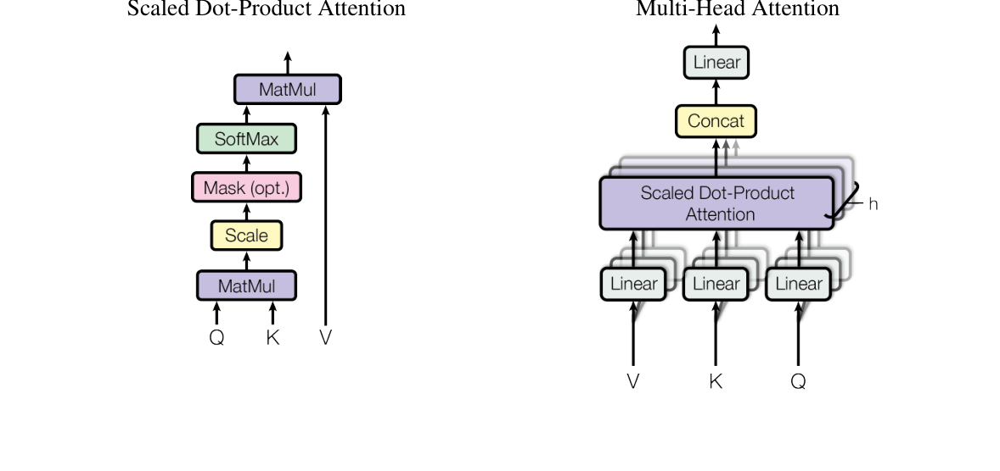
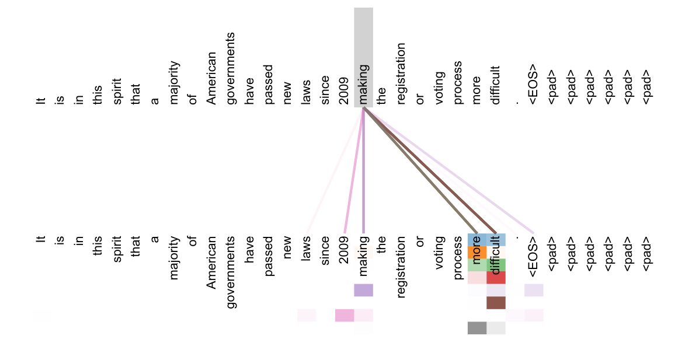

The Transformer — sequence transduction from attention alone, with recurrence and convolution stripped out
One-line summary. The paper removes recurrence (RNNs) and convolution (CNNs) entirely and builds an encoder–decoder from self-attention alone — the Transformer. Because every pair of positions is connected by a constant number of operations, training parallelizes massively, and the model set a new state of the art on WMT 2014 English–German and English–French translation at a fraction of the training cost.
Reading a paper well does not start with the equations on page one. The method Jacques Cornwell laid out in a Nature career column (2026) proceeds in three phases — context → interrogation → verdict — across seven steps. First grasp the big picture (Steps 1–3), then take the methodology and the math apart (Steps 4–5), and only at the end weigh the authors' claims against your own independent reading (Steps 6–7). Each section of this report follows one of those steps, and every step does two things: (a) it first explains what a reader is supposed to do at that step, and (b) it then shows the result of actually doing it for this paper. An experienced researcher spends one to two hours on a paper this way; this document performs those hours for you and shows the work.
| Phase | Step | Guiding question |
|---|---|---|
| Phase 1 The Aerial View | Step 1. Gain a broad overview | Can the abstract and the key figure alone tell you the design, tools, and scope? |
| Step 2. Find the core research question | What specific hypothesis is this paper testing? | |
| Step 3. Map the knowledge gap | What limits prior approaches, and where does this paper slot in? | |
| Phase 2 The Interrogation | Step 4. Assess the methodology | Does the experimental design actually answer the question? (math · structure · controls) |
| Step 5. Reach independent conclusions | Cover up the authors' interpretation — what do the results alone say? | |
| Phase 3 The Verdict | Step 6. Reconcile conclusions | Do the authors' claims outrun their data? |
| Step 7. Consider alternatives | Could confounders, other factors, or conflicts of interest explain the results? |
This section is not one of Cornwell's steps, but it is the foundation you need before you can judge the paper's math yourself. The prerequisite ladder below starts from the most primitive concept (the dot product) and stacks upward, in dependency order, all the way to the paper's own notation (e.g. \( \mathrm{softmax}(QK^{\top}/\sqrt{d_k})V \)). Each rung gives the concept → a short explanation → a worked example with real numbers → which symbol, equation, or claim of the paper it unlocks. External knowledge appears only if it passed the verification protocol in the references.
Section §2 (Background) organizes the drive to "reduce sequential computation" into three lineages. Each lineage's limitation is precisely a design motivation for the Transformer.
| Lineage | Representative work | Remaining limitation |
|---|---|---|
| ① RNN seq2seq + attention | Sutskever et al. 2014 (seq2seq)[K2], Bahdanau et al. 2014 (additive attention)[K1], built on LSTMs[K3] | The hidden state \(h_t\) depends on \(h_{t-1}\) → \(O(n)\) sequential operations along the sequence; training cannot parallelize within an example. |
| ② CNN seq2seq | ByteNet[K6], ConvS2S[K4], Extended Neural GPU | Parallel across positions, but the path connecting two positions grows with their distance (linearly for ConvS2S, logarithmically for ByteNet) → long-range dependencies are hard to learn. |
| ③ Self-attention inside RNNs / memory networks | structured attention, end-to-end memory networks | Uses self-attention but still coupled to recurrence → sequentiality remains. |
| → This paper (Transformer) | A pure self-attention encoder–decoder | Any two positions connected in a constant number of operations (\(O(1)\)). Fully parallel, no recurrence or convolution. Simplifies the architecture itself, unlike large-scale conditional computation (MoE[K7]). |
| Role | What the abstract asserts (gist) |
|---|---|
| Background | Dominant sequence-transduction models are complex RNNs or CNNs with an encoder and decoder; the best also connect the two through attention. |
| Method | Propose the Transformer — a simple architecture based on attention only, dispensing with recurrence and convolution entirely. |
| Result | WMT 2014 EN–DE 28.4 BLEU (over 2 BLEU above the previous best incl. ensembles); single-model EN–FR 41.8 BLEU after 3.5 days on 8 GPUs — a fraction of the prior training cost. |
| Significance | More parallelizable, faster to train, and generalizes well to English constituency parsing. |
The final paragraph of the introduction (§1) effectively declares the paper's thesis:
"In this work we propose the Transformer, a model architecture eschewing recurrence and instead relying entirely on an attention mechanism to draw global dependencies between input and output. The Transformer allows for significantly more parallelization and can reach a new state of the art in translation quality ..."
Unpacked — the hypothesis under test. Strip out recurrence and convolution entirely and build a sequence-transduction model from self-attention alone; then (a) translation quality does not degrade — it surpasses the state of the art — and (b) with sequential dependencies gone, training is much faster. The rest of this report tracks whether claims (a) and (b) are actually supported by the math, the architecture, and the experiments.
The gap is crisp. RNNs cannot parallelize within an example because of their sequentiality — factorizing along positions means \(h_t\) waits for \(h_{t-1}\) — and memory constraints limit batching across long sequences. CNNs parallelize, but their path length grows with distance (linearly for ConvS2S, logarithmically for ByteNet), making long-range dependencies harder to learn. Attention had already proven itself for modeling dependencies regardless of distance, yet — as the paper itself notes, "in all but a few cases" — it was always used together with a recurrent network, so the sequential bottleneck remained.
The open slot is therefore precise: "can attention alone, with no recurrence, build the representations?" The Transformer is that piece — any two positions linked in \(O(1)\) operations, fully parallel, with §4's complexity analysis (Table 1 below) quantifying the advantage. The paper also probes how far the piece generalizes beyond translation, testing the same architecture on English constituency parsing (§6.3) with competitive results — a first hint that the design is not translation-specific.
(1) Embedding + positional encoding. Tokens are embedded into \(d_{\text{model}}=512\) vectors (multiplied by \(\sqrt{d_{\text{model}}}\)) and a positional encoding is added — without recurrence, this is the only way the model knows word order. (2) Encoder layers ×6. Each layer = [multi-head self-attention] + [position-wise FFN], each sublayer wrapped in residual + LayerNorm (Add & Norm). (3) Decoder layers ×6. Each layer = [masked self-attention (future positions set to \(-\infty\) to preserve autoregression)] + [encoder–decoder attention (queries from the decoder, keys/values from the encoder output)] + [FFN]. (4) Output. A final Linear produces vocabulary logits, softmax turns them into probabilities (weights shared with the embedding matrix).

The paper has three numbered equations; two unnumbered ones (MultiHead and the positional encoding) are decisive for understanding, so all five get a card.
| Symbol | Type / shape | Meaning |
|---|---|---|
| \(Q\) | matrix \(\mathbb{R}^{n\times d_k}\) | packed queries — "what each position is looking for" |
| \(K\) | matrix \(\mathbb{R}^{m\times d_k}\) | packed keys — "the label each position advertises" |
| \(V\) | matrix \(\mathbb{R}^{m\times d_v}\) | packed values — "the content actually retrieved" |
| \(QK^{\top}\) | matrix \(\mathbb{R}^{n\times m}\) | dot-product (similarity) scores for every query–key pair |
| \(d_k\) | scalar | key/query dimension (64 in this paper) |
| \(\sqrt{d_k}\) | scalar | variance-normalizing scale factor |
| \(QK^{\top}\) | Measures how aligned each query is with each key; a large value says "look there". Remove it and the model has no basis for deciding where to attend. |
| \(/\sqrt{d_k}\) | As \(d_k\) grows, dot-product variance inflates like \(d_k\), saturating the softmax (vanishing gradients). Dividing by \(\sqrt{d_k}\) restores variance to \(\approx1\); without it, training stalls at large \(d_k\). |
| \(\mathrm{softmax}(\cdot)\) | Turns scores into weights summing to 1 — per row, "how much of each value to take". |
| \(\cdots V\) | Blends the values with those weights. The output is a mixture of the content at relevant positions. |
"Hold your question (\(Q\)) against the labels (\(K\)) on a row of drawers, then pull out each drawer's contents (\(V\)) in proportion to the match." With numbers: if a query scores \([8,0]\) against two keys (scaled: \([1,0]\)), softmax gives \([0.73,0.27]\) and the output is \(0.73\,v_1+0.27\,v_2\).
| Symbol | Type / shape | Meaning |
|---|---|---|
| \(h\) | scalar | number of heads (8 in this paper) |
| \(W_i^Q\) | matrix \(\mathbb{R}^{d_{\text{model}}\times d_k}\) | query projection of head \(i\) |
| \(W_i^K\) | matrix \(\mathbb{R}^{d_{\text{model}}\times d_k}\) | key projection of head \(i\) |
| \(W_i^V\) | matrix \(\mathbb{R}^{d_{\text{model}}\times d_v}\) | value projection of head \(i\) |
| \(W^O\) | matrix \(\mathbb{R}^{hd_v\times d_{\text{model}}}\) | output projection returning the concat to \(d_{\text{model}}\) |
| \(\mathrm{head}_i\) | matrix \(\mathbb{R}^{n\times d_v}\) | attention output in the \(i\)-th subspace |
| \(QW_i^Q,\ KW_i^K,\ VW_i^V\) | Project the same input from a different learned angle per head, so different heads can watch different relations (syntax, coreference, ...). Without the projections, all heads would see the same thing. |
| \(\mathrm{Concat}(\cdots)\) | Joins the \(h\) head outputs (\(d_v=64\) each) into one \(hd_v=512\) vector, pooling the subspace views. |
| \(W^O\) | Mixes the pooled information back to \(d_{\text{model}}\), matching shapes for the residual addition. |
Instead of one reader reading a sentence from a single perspective, eight readers read it simultaneously from different perspectives (subject–verb agreement, pronoun reference, adjacency, ...) and pool their summaries. Because \(d_k=d_v=512/8=64\), all eight together cost about as much as one full-width attention.
| Symbol | Type / shape | Meaning |
|---|---|---|
| \(x\) | vector \(\mathbb{R}^{d_{\text{model}}}\) | one position's representation (512-dim) |
| \(W_1,b_1\) | \(\mathbb{R}^{512\times2048},\ \mathbb{R}^{2048}\) | expansion layer (inner dimension \(d_{ff}=2048\)) |
| \(W_2,b_2\) | \(\mathbb{R}^{2048\times512},\ \mathbb{R}^{512}\) | contraction layer (back to 512) |
| \(\max(0,\cdot)\) | function (ReLU) | nonlinearity clipping negatives to zero |
| \(xW_1+b_1\) | Widens 512 → 2048, lifting each position into a richer feature space. |
| \(\max(0,\cdot)\) | Injects nonlinearity — without it the two linear layers collapse into one and the expressive power vanishes. |
| \(\cdots W_2+b_2\) | Contracts 2048 → 512 to match shapes for the residual addition and the next layer. |
If attention mixes information between positions, the FFN reprocesses each position independently and identically (the same \(W_1,W_2\) at every position — two convolutions with kernel size 1). Zero cross-position interaction is exactly its division of labor with attention.
| Symbol | Type | Meaning |
|---|---|---|
| \(pos\) | integer scalar | position in the sequence (0, 1, 2, ...) |
| \(i\) | integer scalar | dimension index (even → sin, odd → cos) |
| \(d_{\text{model}}\) | scalar | embedding width (512) — PE shares it so the two can be added |
| \(10000^{2i/d_{\text{model}}}\) | scalar | per-dimension wavelength (period) control |
| \(pos/10000^{2i/d_{\text{model}}}\) | Low \(i\) → short wavelength (fast oscillation), high \(i\) → long wavelength. Wavelengths spread geometrically from \(2\pi\) to \(10000\cdot2\pi\), giving each position a unique pattern. |
| sin / cos pairs | With each frequency present as a sin–cos pair, \(PE_{pos+k}\) is a linear transform of \(PE_{pos}\) for any fixed offset \(k\) — making relative positions easy to learn. |
Encode "which position am I" as the combined angles of clock hands spinning at many speeds. Learned positional embeddings performed nearly identically (Table 3 (E)); the sinusoids were chosen hoping they extrapolate to sequences longer than those seen in training.
| Symbol | Type | Meaning |
|---|---|---|
| \(step\_num\) | integer | training steps so far |
| \(warmup\_steps\) | integer (=4000) | length of the linear warm-up window |
| \(d_{\text{model}}\) | scalar (=512) | model width — sets the overall learning-rate scale |
| \(step\_num\cdot warmup\_steps^{-1.5}\) | Dominates during warm-up (\(step \lt warmup\)) → learning rate grows linearly, avoiding early instability from large steps. |
| \(step\_num^{-0.5}\) | Dominates afterwards → learning rate decays as the inverse square root, fine-tuning late in training. |
| \(\min(\cdot,\cdot)\) | Switches between the two regimes automatically; they cross exactly at \(step=warmup\_steps\). |
| \(d_{\text{model}}^{-0.5}\) | Larger models get smaller learning rates, matching the overall scale. |
"Warm slowly, then cool gently." The rate peaks at \(warmup=4000\) and decays smoothly after; used with Adam[K8] (\(\beta_1{=}0.9,\beta_2{=}0.98,\epsilon{=}10^{-9}\)).
Section §4 quantifies the case for self-attention along three axes. Notation: \(n\) = sequence length, \(d\) = representation width, \(k\) = convolution kernel, \(r\) = restricted-attention neighborhood.
| Layer type | Complexity per layer | Sequential ops | Max path length |
|---|---|---|---|
| Self-Attention | \(O(n^2\cdot d)\) | \(O(1)\) | \(O(1)\) |
| Recurrent | \(O(n\cdot d^2)\) | \(O(n)\) | \(O(n)\) |
| Convolutional | \(O(k\cdot n\cdot d^2)\) | \(O(1)\) | \(O(\log_k n)\) |
| Self-Attention (restricted) | \(O(r\cdot n\cdot d)\) | \(O(1)\) | \(O(n/r)\) |
Re-typeset from the paper's Table 1; values verified cell by cell against the original.
The point: self-attention needs \(O(1)\) sequential operations and has \(O(1)\) path length — any two positions connect in one hop (RNNs are \(O(n)\) on both). Per-layer cost is even cheaper than an RNN whenever \(n \lt d\), the common case in sentence-level translation. This is the theoretical backing for claim (b), "training gets faster".
| Audit item | State in this paper | Verdict |
|---|---|---|
| Tools/data appropriateness | WMT 2014 EN–DE (~4.5M sentence pairs) and EN–FR (36M); byte-pair / word-piece encodings — the field's standard benchmark. | solid ✓ |
| Samples / repeats (seeds) | Final translation numbers largely from a single training run + checkpoint averaging. No seed variance or confidence intervals reported. | weak |
| Negative control = baselines | Table 2 compares many of the era's strongest models: ByteNet, ConvS2S, GNMT, MoE. | solid ✓ |
| Positive control = ablations | Table 3 systematically varies heads, \(d_k\), model size, dropout, positional encoding. | solid ✓ |
| Data availability | WMT 2014 is a public, standard dataset. | public ✓ |
| Code availability | Training/evaluation code released as tensorflow/tensor2tensor. | public ✓ |
| Model | BLEU EN-DE | BLEU EN-FR | Training cost (FLOPs) EN-DE | EN-FR |
|---|---|---|---|---|
| ByteNet | 23.75 | — | — | — |
| GNMT + RL | 24.6 | 39.92 | \(2.3\cdot10^{19}\) | \(1.4\cdot10^{20}\) |
| ConvS2S | 25.16 | 40.46 | \(9.6\cdot10^{18}\) | \(1.5\cdot10^{20}\) |
| MoE | 26.03 | 40.56 | \(2.0\cdot10^{19}\) | \(1.2\cdot10^{20}\) |
| GNMT + RL Ensemble | 26.30 | 41.16 | \(1.8\cdot10^{20}\) | \(1.1\cdot10^{21}\) |
| ConvS2S Ensemble | 26.36 | 41.29 | \(7.7\cdot10^{19}\) | \(1.2\cdot10^{21}\) |
| Transformer (base) | 27.3 | 38.1 | \(3.3\cdot10^{18}\) | \(3.3\cdot10^{18}\) |
| Transformer (big) | 28.4 | 41.8 | \(2.3\cdot10^{19}\) | \(2.3\cdot10^{19}\) |
Re-typeset from the paper's Table 2 (WMT 2014 newstest2014); values verified cell by cell. The EN-FR-only Deep-Att+PosUnk rows are omitted for space — single 39.2 / ensemble 40.4.
What the numbers themselves say. Transformer (big)'s EN-DE 28.4 beats every single and ensemble model in the table. Its EN-FR 41.8 is the best single model. Transformer (base) trains for \(3.3\times10^{18}\) FLOPs — one to three orders of magnitude below ConvS2S and GNMT (\(10^{19}\)–\(10^{21}\)). "Higher BLEU at lower cost" holds from this one table.
What this data alone cannot say. The table says nothing about how well BLEU tracks real translation quality (fluency, meaning preservation). FLOPs are estimates (peak GPU throughput × time) and can differ from wall-clock. Both language pairs are high-resource, so generalization to low-resource languages is unknown.
Questions to ask yourself. ① Is the gain from the architecture, or from the training recipe — bigger batches, label smoothing, checkpoint averaging? ② EN-FR base (38.1) trails some ensembles; in which setting exactly does "SOTA" hold? ③ Is the cost comparison apples-to-apples (hardware and precision assumptions)?
| Variant | Change (base: \(N{=}6\), \(d_{\text{model}}{=}512\), \(h{=}8\), \(P_{drop}{=}0.1\)) | PPL (dev) | BLEU (dev) |
|---|---|---|---|
| base | — | 4.92 | 25.8 |
| (A) | 1 head (\(d_k{=}512\)) | 5.29 | 24.9 |
| 32 heads (\(d_k{=}16\)) | 5.01 | 25.4 | |
| (B) | \(d_k\) reduced to 16 | 5.16 | 25.1 |
| (C) | bigger model (\(d_{\text{model}}{=}1024\), \(d_{ff}{=}4096\)) | 4.66–5.12 | 25.4–26.2 |
| (D) | dropout 0.0 | 5.77 | 24.6 |
| dropout 0.2 | 4.95 | 25.5 | |
| (E) | learned positional embedding instead of sinusoids | 4.92 | 25.7 |
| big | \(N{=}6\), \(d_{\text{model}}{=}1024\), \(h{=}16\), \(P_{drop}{=}0.3\), 300K steps | 4.33 | 26.4 |
Condensed re-typeset of the paper's Table 3 (EN-DE newstest2013 dev) — representative rows only, values verified cell by cell. See the paper for the full grid.
What the numbers themselves say. (A) One head (24.9) is worse than eight (25.8), and too many (32 → 25.4) also hurts — the middle wins. (B) Cutting \(d_k\) to 16 drops quality to 25.1 → key width matters. (C) Bigger models generally improve. (D) No dropout overfits (24.6); 0.2 is better. (E) Learned positional embeddings (25.7) are effectively tied with sinusoids (25.8).
What this data alone cannot say. These are single runs on a dev set (newstest2013); whether 0.1–0.4 BLEU gaps are statistically meaningful is unknown, as is whether the trends transfer beyond one language pair.
Questions to ask yourself. ① How many repeats would you need before calling a 0.9 BLEU gap "important"? ② If (E) is a tie, the case for sinusoids rests on what, exactly (extrapolation hopes)? ③ Which lever is largest — heads, size, or dropout?

These are the places where first-time readers actually stall. Each is resolved as the misreading → why the paper invites it → the resolution.
Where they agree (fair assessment). Research claims (a) and (b) are well supported. Table 2 shows "higher BLEU at lower FLOPs" and Table 1 shows "\(O(1)\) sequential ops and path length", so the core claim — SOTA translation and fast training from attention alone, no recurrence — is not an overstatement. The ablations (Table 3) also control each component's contribution honestly.
Points to press.
| Category | Assessment |
|---|---|
| Confounders | How much of the gain is the self-attention architecture versus the training recipe — large batches (≈25k tokens), label smoothing (\(\epsilon_{ls}{=}0.1\))[K10], checkpoint averaging, the warm-up schedule — is not fully separable. Table 3 controls architectural knobs, but the recipe stays mostly fixed. |
| Metric dependence | Every conclusion rides on BLEU alone; whether human evaluation or other metrics would preserve the ranking is unverified. |
| Limitations acknowledged | \(O(n^2)\) attention cost on long sequences → the authors themselves preview "restricted (local) attention"; extending beyond text (images, audio, video) and making generation less sequential are left as future work. |
| Limitations not acknowledged | No seed variance or significance reporting; validation limited to high-resource language pairs; no quantification of what \(O(n^2)\) memory means for real deployments. |
| Conflicts / funding | Seven of eight authors are at Google (Brain/Research) and the released code is Google's tensor2tensor. No separate funding or COI statement. Benchmarks and cost estimates are on in-house infrastructure — worth keeping in mind while reading. |
The core contribution, reconstructed in four sentences. The Transformer is the first sequence-transduction model to remove recurrence and convolution entirely, building its encoder–decoder from self-attention that links any two positions in a constant number of operations. It parallelizes scaled dot-product attention across multiple heads, injects order through sinusoidal positional encodings, reprocesses each position with a feed-forward network, and stabilizes everything with residuals and LayerNorm. The result trained massively in parallel and set a new SOTA on WMT 2014 EN-DE (28.4) and EN-FR (41.8) at a fraction of prior cost, generalizing to parsing as well. This simple, parallel architecture went on to become the backbone of virtually every large language and vision model.
Reproduction code for the numeric examples in this report (requires numpy). Copy, run, and you should see the same output. ✓ All four snippets passed machine verification when this report was generated.
import numpy as np
scores = np.array([8.0, 0.0]) # query·key dot-product scores
scaled = scores / np.sqrt(64) # d_k = 64 → divide by 8
w = np.exp(scaled) / np.exp(scaled).sum() # softmax
print(np.round(w, 2))[0.73 0.27]
import numpy as np
z = np.array([2.0, 1.0, 0.0])
w = np.exp(z) / np.exp(z).sum()
print(np.round(w, 3), round(w.sum(), 3)) # weights and their sum (=1)[0.665 0.245 0.09 ] 1.0
import numpy as np
rng = np.random.default_rng(0) # fixed seed → reproducible
q, k = rng.standard_normal((2, 100000, 64))
dots = (q * k).sum(axis=1) # 100k dot products at d_k = 64
print(round(dots.std(), 1), round((dots / np.sqrt(64)).std(), 2))8.0 1.0
import numpy as np
x = np.array([2.0, 4.0, 6.0])
ln = (x - x.mean()) / x.std()
print(np.round(ln, 2))[-1.22 0. 1.22]
| Term | Meaning |
|---|---|
| BLEU | Automatic machine-translation metric based on n-gram overlap with reference translations (higher is better). |
| BPE / word-piece | Subword tokenizers that split words into frequent pieces to handle rare and unseen words. |
| encoder–decoder attention | Attention where the decoder provides queries and the encoder output provides keys/values; generation consults the input. |
| FFN (position-wise) | A two-layer fully connected network applied identically at each position (Eq. 2); no cross-position interaction. |
| LayerNorm | Normalizes a sample's features to zero mean and unit variance, stabilizing training (the "Norm" in Add & Norm). |
| masked self-attention | Decoder self-attention with future positions set to \(-\infty\), preserving autoregressive generation. |
| multi-head attention | Running attention \(h\) times through different projections and merging the results (the MultiHead formula). |
| positional encoding | Sinusoidal vectors injecting order information into a recurrence-free model (§3.5). |
| residual connection | Adding the input to the output, \(x+\mathrm{Sublayer}(x)\), to ease training of deep networks. |
| scaled dot-product attention | \(\mathrm{softmax}(QK^{\top}/\sqrt{d_k})V\) — the Transformer's basic attention unit (Eq. 1). |
| self-attention | Attention relating different positions of one sequence to build that sequence's representation. |
| sequence transduction | Transforming one sequence into another (translation, summarization, ...). |
| warmup | Linearly raising the learning rate early in training before decaying it (Eq. 3). |
The paper. A. Vaswani, N. Shazeer, N. Parmar, J. Uszkoreit, L. Jones, A. N. Gomez, Ł. Kaiser, I. Polosukhin. "Attention Is All You Need." NIPS 2017. arXiv:1706.03762. https://arxiv.org/abs/1706.03762
The [K#] entries below are external sources used for background and related work. All were verified directly against their arXiv abstract or official page (checked 2026-07-06; [K3]'s publisher abstract returned 403, so only its bibliography was confirmed). ✓ Verified
| ID | Source (title · authors · year · URL) | Status |
|---|---|---|
| [K1] | Neural Machine Translation by Jointly Learning to Align and Translate — Bahdanau, Cho, Bengio, 2014. arXiv:1409.0473. link | ✓ |
| [K2] | Sequence to Sequence Learning with Neural Networks — Sutskever, Vinyals, Le, 2014 (NIPS). arXiv:1409.3215. link | ✓ |
| [K3] | Long Short-Term Memory — Hochreiter, Schmidhuber, 1997. Neural Computation 9(8):1735—1780. link | ✓ biblio only |
| [K4] | Convolutional Sequence to Sequence Learning — Gehring, Auli, Grangier, Yarats, Dauphin, 2017. arXiv:1705.03122. link | ✓ |
| [K5] | Layer Normalization — Ba, Kiros, Hinton, 2016. arXiv:1607.06450. link | ✓ |
| [K6] | Neural Machine Translation in Linear Time (ByteNet) — Kalchbrenner et al., 2016. arXiv:1610.10099. link | ✓ |
| [K7] | Outrageously Large Neural Networks: The Sparsely-Gated Mixture-of-Experts Layer — Shazeer et al., 2017. arXiv:1701.06538. link | ✓ |
| [K8] | Adam: A Method for Stochastic Optimization — Kingma, Ba, 2014 (ICLR 2015). arXiv:1412.6980. link | ✓ |
| [K9] | Google's Neural Machine Translation System (GNMT) — Wu, Schuster, Chen et al., 2016. arXiv:1609.08144. link | ✓ |
| [K10] | Rethinking the Inception Architecture for Computer Vision (label smoothing) — Szegedy et al., 2015 (CVPR 2016). arXiv:1512.00567. link | ✓ |
| [K11] | Deep Residual Learning for Image Recognition — He, Zhang, Ren, Sun, 2015 (CVPR 2016). arXiv:1512.03385. link | ✓ |